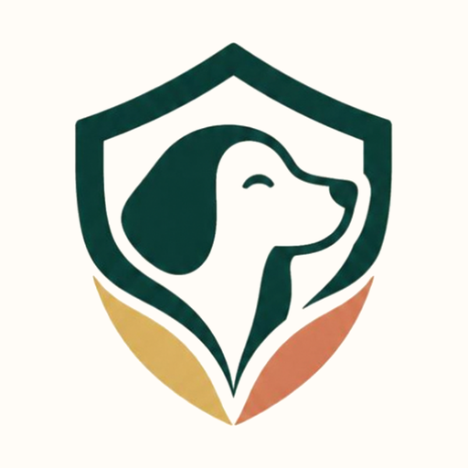

DogardiPrivacy policy
Last updated: November 26, 2026
Dogardi (“we”, “us”) is an app for looking after a dog with the people who help: routine and reminders, meals, a medical card, and a shared “pack”. This policy explains what we collect, why, who can see it, and the choices you have. Dogardi is run by Jaden Bruno John Pinto, an individual in Mississauga, Ontario, Canada. Contact: support@dogardi.com.
What we collect
- Your account: your email address, name, phone number (if you add it) and profile photo (if you add one). Your password is handled by our sign-in provider; we never see it.
- Your dogs: what you enter about them, such as name, photo, breed, birthday, weight, microchip number, vet, allergies, medications, vaccines, vet visits and notes.
- Your plan and log: routine items, meals, to-dos, bookings, and what was logged, when and by whom.
- Your pack: who you invite, their roles and what they’re allowed to see, chat messages and photos you send, and reactions.
- Emergency info: emergency contacts (names and phone numbers you enter) and the emergency vet you pick.
- Emergency mode: when you start emergency mode, an alert with your name, phone number and, if you allow it, where you are at that moment, so your pack can help.
- Lost dog flyers: what you put on a flyer (your dog’s photo and description, where they were last seen, your first name and phone numbers), and the sightings people send from the flyer’s page.
- Reports: if you report a chat message, the message, who sent it and who reported it, so we can review it.
- Settings: notification times, units and similar preferences, so they follow you to another phone.
We don’t use advertising trackers or sell your data. We never collect your location in the background. Your phone’s location is only used, with your permission, when you search for a nearby vet, fill in a lost dog flyer, or start emergency mode (then it’s sent to your pack).
How we use it
Only to run Dogardi: to keep your dog’s info in sync across your phones and your pack, to show reminders, to let a sitter see what you chose to share, and to answer support requests. Reminders are scheduled on your phone.
Who can see it
- Your pack: people you invite see your dog’s info according to the permissions you set (for example, a walker may see the routine but not the medical card). You can change permissions or remove someone at any time.
- Sitter links: when you make a sitter link, anyone with that link can see what you chose (today’s routine, house notes, medical info) plus your dog’s emergency info, your first name and phone number, until the link expires or you stop sharing. Logs made from the link show in your pack as the sitter’s name.
- Lost dog pages: a flyer’s QR code opens a public page that anyone with the code can see: what’s on the flyer (including your phone numbers) until you mark your dog as found. Someone who taps “I saw” on that page sends you and your pack where they are and an optional note; we keep that so your pack can see it.
- Service providers who run parts of Dogardi for us, under contracts that limit their use of your data:
- Supabase (database, sign-in, photo storage), servers in the United States.
- Anthropic, only if you use a feature that reads text or photos with AI (for example, scanning a vaccine booklet). What you send is used to answer that request and isn’t used to train their models.
- Resend, to send the emails Dogardi sends you, such as sign-up and password reset codes (your email address).
- Apple, to deliver notifications.
- Sentry, for crash reports: when the app hits an error, what went wrong, on which screen, and the phone and app version. They don’t include your name, email or what you’ve entered, and aren’t linked to your account.
- The law: if we’re legally required to share information, or to protect someone’s safety.
Shopping links
Some product links go to Amazon. As an Amazon Associate we earn from qualifying purchases. Amazon’s own privacy policy applies on their site; we don’t receive your purchase details.
Keeping it and deleting it
We keep your data while you have an account. You can delete your account in the app (Profile → Account → Delete account); that permanently removes your account, your dogs, your plan, your photos and your pack, usually right away and always within 30 days. Messages you sent in someone else’s pack chat stay in that chat for them, but are no longer linked to your account. You can also ask us for a copy of your data at support@dogardi.com.
Security
Data is sent over encrypted connections, and the database only lets each person reach what their account or pack role allows. Sitter links use long random codes and stop working when they expire or you stop sharing.
Children
Dogardi isn’t meant for children under 13, and we don’t knowingly collect their information.
Your rights
Depending on where you live, you may have the right to access, correct, delete or move your data, or to complain to a privacy regulator. Write to us and we’ll reply within 30 days. We follow Canada’s privacy law (PIPEDA); if you’re not happy with our answer, you can complain to the Office of the Privacy Commissioner of Canada (priv.gc.ca) or the privacy regulator where you live. We don’t sell your personal information.
Privacy officer
The person responsible for protecting your personal information is Jaden Pinto. You can reach them at support@dogardi.com.
Changes
If we change this policy, we’ll update the date above and, for important changes, tell you in the app.